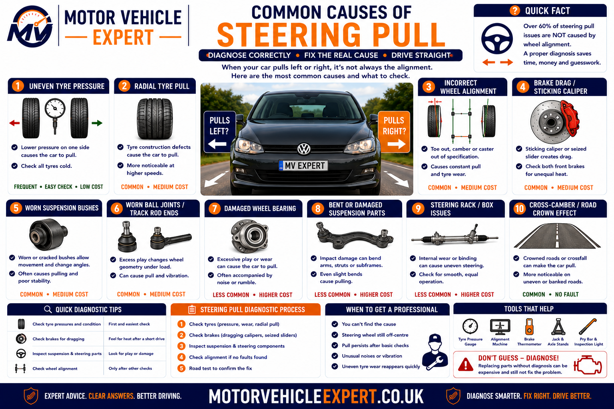
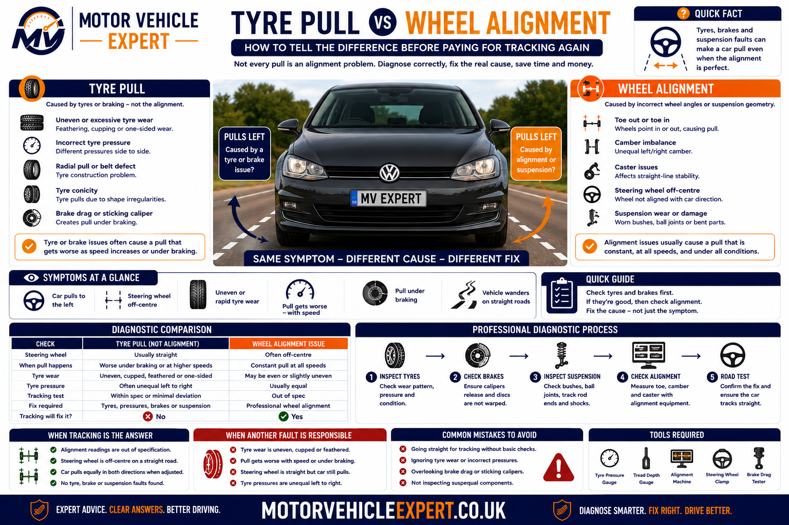
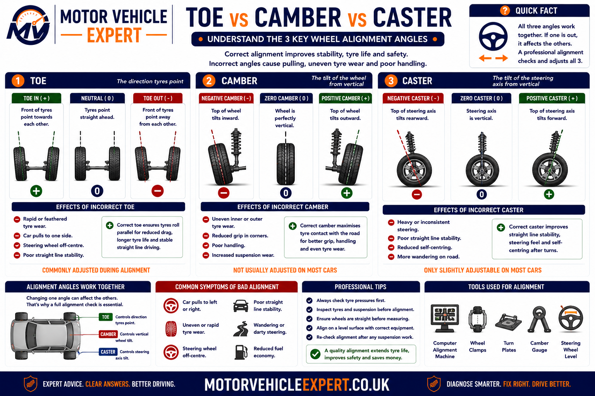
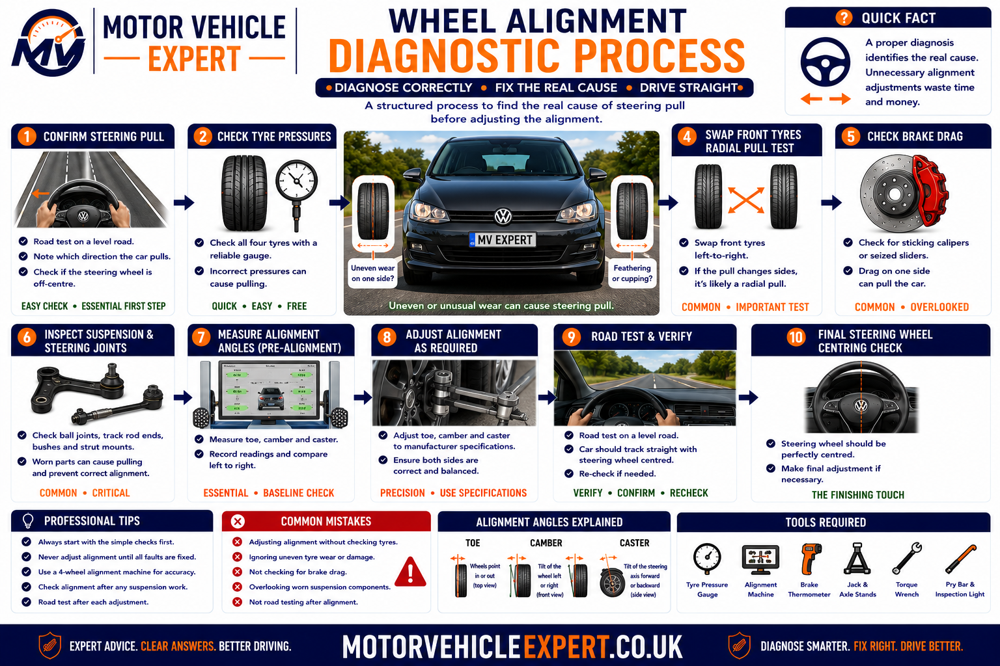
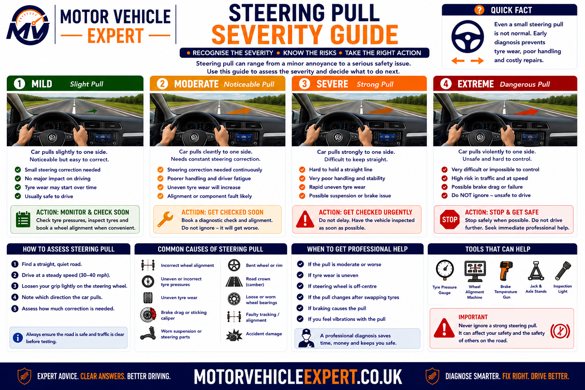
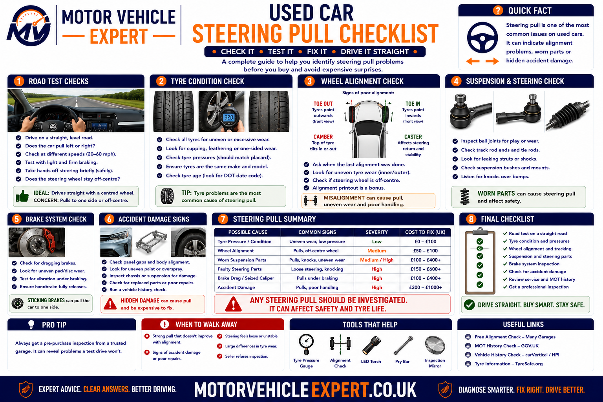
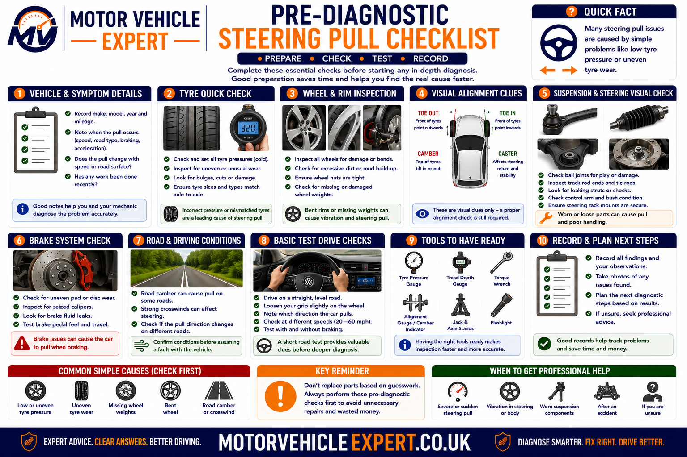

Use the Diagnostic App for Steering-Pull Problems
A vehicle may pull because of tyres, road camber, alignment, brakes, suspension or steering wear. The Motor Vehicle Expert diagnostic app can help you compare the symptom pattern before authorising another tracking adjustment or replacing parts.
1. Classify the Pull
Decide whether the vehicle drifts gradually, pulls sharply or requires constant steering correction.
2. Compare Conditions
Note whether the pull changes with road surface, speed, braking, acceleration or tyre temperature.
3. Separate Tyres From Alignment
Compare pressures, tyre condition and tyre-swap evidence with the alignment printout.
4. Judge the Urgency
Identify whether a garage visit, limited driving or immediate recovery is appropriate.
Note whether the steering wheel is centred, which direction the vehicle moves, how quickly the pull develops and whether braking changes it. This information helps distinguish tyre force, alignment error and brake drag.
Why Does a Car Pull Left After Tracking?
A car can still pull left after tracking because tracking often adjusts only the front toe setting. The vehicle may still have unequal tyre pressures, tyre conicity, uneven tyre wear, road camber, incorrect camber or caster, rear thrust-angle error, brake drag, worn suspension joints or bent components.
Start by checking cold tyre pressures, tyre condition and whether the steering wheel sits centrally. Then review the before-and-after alignment printout and inspect the brakes, steering and suspension before authorising repeated toe adjustment.
Gradual Left Drift
More likely to involve road camber, tyre pressure, tyre conicity, tread wear or a small cross-angle difference.
Sharp Continuous Pull
More likely to involve brake drag, a damaged tyre, significant alignment error or a worn or bent suspension component.
Steering Wheel Off-Centre
More likely to involve poor steering-wheel centring, unequal track-rod adjustment or incorrect front or rear alignment.
Pull Only While Braking
More likely to involve a sticking caliper, seized slider, collapsed brake hose or unequal braking force.
Do not keep adjusting toe until the vehicle appears to drive straight. Tyres, brake drag and worn suspension can create the pull, while incorrect repeated adjustment can leave the steering wheel off-centre and increase tyre wear.
A sticking brake can imitate steering pull. If one wheel becomes much hotter, produces a burning smell or creates stronger pull after braking, stop driving and arrange brake inspection.
Is a Car Pulling Left After Tracking Serious?
A mild leftward drift on a strongly cambered UK road may be a normal response to the road surface. A continuous pull that requires steering correction, worsens with speed or changes under braking should not be dismissed as normal road camber.
The urgency depends on how strongly the vehicle changes direction, whether the steering feels loose or unstable, whether tyre wear is developing and whether one brake or wheel becomes unusually hot. A recent alignment does not make the vehicle safe if the underlying tyre, brake, steering or suspension fault remains.
Mild Camber-Related Drift
Lower ConcernThe vehicle drifts gently on heavily crowned roads but travels straighter on flatter surfaces without constant correction.
Consistent Left Pull
Needs DiagnosisThe vehicle moves left repeatedly on different roads and the driver must hold right-hand steering pressure.
Pull With Tyre Wear
High ConcernRapid shoulder wear, feathering or damaged tread suggests that tyre or geometry problems are continuing after tracking.
Sharp or Braking Pull
UrgentA sudden directional change, hot wheel, burning smell or pull during braking may indicate a dangerous brake, tyre or suspension defect.
Lower-Risk Conditions
- ✓ The drift is mild and predictable.
- ✓ Steering remains firm and responsive.
- ✓ No tyre is visibly damaged or underinflated.
- ✓ The vehicle does not pull more strongly under braking.
- ✓ No wheel becomes unusually hot.
- ✓ The garage is nearby and the route is suitable.
High-Risk Conditions
- ! The vehicle changes direction sharply.
- ! Steering feels loose, vague or unstable.
- ! A tyre has a bulge, split or exposed structure.
- ! One wheel is much hotter than the others.
- ! The vehicle pulls severely during braking.
- ! A suspension or steering component is loose or damaged.
Alignment equipment can measure and adjust wheel angles, but it cannot restore a damaged tyre, release a binding brake or remove play from worn suspension and steering joints.
Steering Pull vs Road Drift and an Off-Centre Steering Wheel
Drivers often describe any sideways movement as a pull, but a gradual road-camber drift, a strong mechanical pull and an off-centre steering wheel are different complaints. Each pattern requires a different diagnostic direction.
Gradual Drift
The vehicle slowly moves left when steering pressure is relaxed, particularly on roads sloping towards the kerb.
Continuous Pull
The vehicle requires constant right-hand correction to remain in a straight path on several different road surfaces.
Off-Centre Steering Wheel
The vehicle may travel straight, but the steering wheel sits rotated because toe or thrust-angle centring is incorrect.
Brake-Related Pull
The vehicle changes direction mainly when the brakes are applied or after one brake begins binding.
| Driver complaint | Typical behaviour | First areas to check |
|---|---|---|
| Mild drift towards the kerb | Changes with road slope and surface | Road camber, tyre pressure and tyre construction |
| Strong pull on most roads | Requires continuous steering correction | Tyres, camber, caster, brakes and suspension |
| Steering wheel sits left or right | Vehicle may still follow a straight path | Toe centring, track rods and rear thrust angle |
| Pull appears only under braking | Direction changes as brake pressure rises | Calipers, sliders, hoses, discs and friction material |
| Vehicle wanders both directions | Constant corrections are required | Tyres, steering play, caster and worn suspension |
| Pull follows acceleration | Direction changes as drive torque increases | Torque steer, bushes, driveshafts and tyre grip |
A vehicle can travel straight while the steering wheel remains rotated because the front toe was adjusted without correctly centring the wheel or because the rear thrust angle makes the vehicle travel slightly sideways.
When Does the Car Pull Left?
The conditions that trigger or strengthen the pull can identify whether the source is road surface, tyres, brakes, alignment, drivetrain load or worn steering and suspension components.
On Most Roads
A repeatable pull on roads with different slopes supports a genuine tyre, brake, alignment or suspension problem.
Only on Cambered Roads
Road slope may be the main influence, although tyre forces and cross-alignment angles can make the response stronger.
Only at Higher Speeds
Tyre construction, aerodynamic effects, caster imbalance and steering looseness become more noticeable as speed increases.
Only Under Braking
Unequal braking force, binding brakes, contaminated friction material or worn suspension require inspection.
After Braking
A sticking caliper or collapsed hose may leave one brake partially applied after the pedal is released.
During Acceleration
Torque steer, worn control-arm bushes, driveshaft angles and unequal tyre grip may influence direction.
After a Tyre Change
Tyre conicity, mixed construction, pressure differences or incorrect rotation direction become more likely.
After Kerb or Pothole Impact
Bent arms, struts, hubs, wheels or subframe displacement should be considered.
After Recent Tracking
Steering-wheel centring, toe adjustment, equipment setup and unresolved mechanical faults require review.
More Likely When
- ✓ The pull changes between road surfaces.
- ✓ The symptom began after tyre replacement or rotation.
- ✓ Tyre pressures differ across the axle.
- ✓ Swapping tyres changes the direction or strength of pull.
- ✓ No brake heat or steering looseness is present.
More Likely When
- ✓ The pull is strong on several roads.
- ✓ Braking changes the direction sharply.
- ✓ Steering feels loose or fails to self-centre.
- ✓ Knocking or suspension movement is present.
- ✓ Alignment readings cannot be brought into specification.
A single road can give a misleading result because of camber, grooves, repairs, wind and traffic conditions. A safe comparison across several flatter surfaces provides better evidence.
Common Causes of a Car Pulling Left After Tracking
Tracking adjusts wheel direction, but it does not eliminate every force that can steer the vehicle. Tyres, road slope, brakes, suspension geometry and component movement can all create a pull even when front toe appears correct.

A correct diagnosis should separate tyre-generated force from alignment error and mechanical drag before additional adjustments are made.
Unequal Tyre Pressures
Different pressures across the same axle alter rolling resistance, tyre shape and steering response.
Tyre Conicity
Internal tyre construction can generate a sideways force even when wheel-alignment readings are acceptable.
Uneven Tyre Wear
Shoulder wear, feathering, cupping and distorted tread can make the tyre follow the road unevenly.
Mixed Tyres
Different brands, patterns, constructions and tread depths can create unequal steering and rolling forces.
Road Camber
Roads sloping towards the kerb can produce a mild leftward drift, especially on sensitive vehicles.
Incorrect Front Toe
Poor adjustment can create instability, tyre scrub or an off-centre steering wheel.
Camber Difference
Unequal side-to-side camber can generate different steering forces across the front axle.
Caster Difference
Unequal caster affects straight-line stability and steering self-centring.
Rear Thrust-Angle Error
Rear-wheel direction can make the vehicle travel slightly sideways and leave the steering wheel off-centre.
Brake Drag
A sticking caliper, seized slider or collapsed hose can make one wheel resist rotation.
Worn Steering or Suspension
Bushes, track rod ends, ball joints and wheel bearings can allow alignment angles to change while driving.
Bent or Displaced Components
Kerb, pothole and collision damage can bend arms, struts, hubs, subframes and mounting points.
Alignment equipment measures wheel geometry. It does not measure tyre conicity, internal tyre damage, brake drag or every form of suspension movement under road load.
Can UK Road Camber Make a Car Drift Left?
Yes. Many UK roads are constructed with a crown or crossfall so rainwater drains towards the kerb. This slope can encourage a mild leftward drift, particularly on vehicles with wide tyres, firm suspension or sensitive steering geometry.
Road camber should not normally create a sharp pull or require continuous strong correction. If the vehicle moves left on flatter roads, pulls during braking or wears tyres unevenly, further diagnosis is required.
Road Crown
The centre of the road may sit higher than the edges, producing a natural slope towards the kerb.
Surface Grooves
Heavy-vehicle wear, repairs and ruts can steer wide tyres or tyres with uneven tread.
Crosswind
Strong side winds can create steering pressure that resembles alignment pull.
Wide or Low-Profile Tyres
Wider tread and firmer sidewalls can make the vehicle react more strongly to cambers and grooves.
Tyre Conicity
A tyre-generated force can combine with road camber and make a mild drift feel much stronger.
Cross-Caster and Cross-Camber
Small geometry differences may be used within specification to manage normal road-camber influence.
| Road-test result | Road camber more likely | Vehicle fault more likely |
|---|---|---|
| Direction changes with road slope | Yes | Less likely |
| Vehicle pulls left on flatter surfaces | Less likely | Yes |
| Pull becomes stronger under braking | No | Brake or suspension fault likely |
| Steering wheel remains off-centre everywhere | No | Alignment or thrust-angle issue likely |
| Tyre swap changes the pull | No | Tyre-generated force likely |
| One wheel becomes hotter | No | Brake drag or bearing issue likely |
Keep both hands ready to control the vehicle. Observe the amount of correction required rather than allowing the car to travel uncontrolled across the road.
Can Unequal Tyre Pressure Cause a Left Pull?
Yes. Tyre pressure changes the shape, stiffness, rolling resistance and contact patch of the tyre. A significant pressure difference across the same axle can make the vehicle drift or pull and can also distort alignment diagnosis.
Pressures should be checked when the tyres are cold and adjusted to the vehicle manufacturer’s figures for the tyre size and load condition. Do not rely only on visual appearance because modern radial tyres can look normal while underinflated.
Low Pressure on One Side
Greater tyre deformation and rolling resistance can influence steering direction and heat buildup.
Excessive Pressure on One Side
A smaller and firmer contact patch can change grip, steering response and road-camber sensitivity.
Incorrect Loaded Pressures
Pressures intended for a heavily loaded vehicle may alter ride and steering behaviour when the car is lightly loaded.
Slow Puncture
A leaking valve, rim or puncture may allow the pull to return after pressures have been corrected.
Inaccurate Gauge
Poor-quality or damaged pressure gauges can create misleading side-to-side readings.
Hot Tyre Readings
Pressure rises as tyres warm, so comparisons made after driving may not reflect the cold specification.
Recommended Procedure
- ✓ Check pressures before a significant journey.
- ✓ Use the manufacturer’s recommended figures.
- ✓ Confirm the tyre size matches the pressure information.
- ✓ Compare both tyres on the same axle.
- ✓ Inspect valves, rims and tread for leakage.
- ✓ Recheck after several days if a slow leak is suspected.
Continue Testing If...
- ! The pull remains after pressures are corrected.
- ! One tyre repeatedly loses pressure.
- ! Tread wear differs across the axle.
- ! The steering wheel remains off-centre.
- ! The vehicle pulls under braking.
- ! Alignment readings are outside specification.
Deliberately using unequal or excessive pressures may alter the symptom temporarily but can reduce grip, worsen wear and hide the actual tyre, brake or geometry fault.
First Checks When a Car Still Pulls After Tracking
Begin with low-cost safety checks before paying for another alignment. The objective is to confirm tyre condition, identify brake drag, inspect obvious component wear and obtain the previous alignment measurements.
1. Check Cold Tyre Pressures
Correct all four tyres to the manufacturer’s specified pressures before repeating the road test.
2. Inspect Tyre Condition
Look for uneven wear, bulges, distortion, feathering, damage and mismatched tyres.
3. Check Steering-Wheel Position
Record whether the wheel is centred when the vehicle travels straight on a suitable road.
4. Compare Several Roads
Assess the vehicle on safe roads with different cambers and surfaces.
5. Compare Braking Behaviour
Note whether light or firm braking changes the direction or strength of the pull.
6. Check for Excess Brake Heat
A professional can compare wheel temperatures and inspect for binding brakes safely.
7. Review the Alignment Printout
Obtain the before-and-after toe, camber, caster and rear alignment readings where measured.
8. Inspect Steering and Suspension
Check bushes, joints, bearings, springs, struts, arms and subframe position before further adjustment.
Ask What Was Adjusted
Confirm whether the garage adjusted front toe only or performed a complete four-wheel measurement and correction.
Ask Whether the Wheel Was Locked
Correct steering-wheel centring is essential while track rods are adjusted.
Ask About Calibration
Confirm that equipment setup, wheel runout compensation and manufacturer specifications were used correctly.
Ask About Worn Components
Alignment should not be finalised while joints or bushes allow the wheel position to move.
Ask About Tyre-Swap Testing
A controlled tyre-position test can reveal whether the pull follows a particular tyre.
Ask for a Road-Test Result
The completed repair should be verified on a suitable road, not judged only from alignment-screen colours.
The measurements can reveal whether only front toe was adjusted, whether camber or caster remained unequal and whether the rear thrust angle was checked.
A binding brake can become hot enough to cause burns. Temperature comparison should be carried out safely using suitable equipment and without approaching moving traffic.
Tyre Pull and Tyre Conicity Explained
A vehicle can pull even when its wheel-alignment readings are within specification because tyres generate forces of their own. Tyre conicity, internal belt position, tread construction, distortion and uneven wear can all create a sideways force as the tyre rolls.
Tracking equipment measures wheel angles; it does not directly measure the lateral force produced by each tyre. This is why a car can leave an alignment bay with green readings and still drift or pull consistently towards one side.

If moving a tyre changes the strength or direction of the pull, tyre force becomes more likely than a fixed suspension-geometry problem.
Tyre Conicity
The tyre behaves slightly like a cone and produces a continuous sideways force while rolling.
Radial Force Variation
Differences in tyre stiffness around its circumference can create vibration, steering disturbance and inconsistent road contact.
Internal Belt Offset
Uneven belt positioning or construction can influence how the tyre tracks even when the tread appears normal.
Tread Distortion
Impact damage, separation or manufacturing variation can alter the rolling shape and direction of force.
Shoulder Wear
Unequal inner or outer shoulder wear can make the tyre react differently to road camber and steering load.
Feathered Tread
Saw-tooth wear caused by incorrect toe can make the tyre track unevenly even after alignment is corrected.
Tyre Damage
Bulges, impact breaks, separations and distorted carcasses can cause dangerous pull or instability.
Direction-Specific Tyres
Directional tyres fitted against their marked rotation direction may affect water clearance, noise and handling.
Asymmetric Tyres
Tyres marked inside and outside must be fitted correctly so their tread and sidewall design operate as intended.
Common Diagnostic Clues
- ✓ The pull began after fitting or rotating tyres.
- ✓ Alignment readings are within specification.
- ✓ Pressures are correct but the pull remains.
- ✓ Swapping tyre positions changes the symptom.
- ✓ Tyre brands or tread depths differ across the axle.
- ✓ No binding brake or loose joint is found.
Common Diagnostic Clues
- ✓ Camber or caster differs significantly side to side.
- ✓ Steering-wheel position is incorrect.
- ✓ Rear thrust angle is outside specification.
- ✓ Tyre-position changes do not affect the pull.
- ✓ Suspension damage or displacement is present.
- ✓ Angles cannot be adjusted into specification.
| Diagnostic result | Tyre force more likely | Alignment fault more likely |
|---|---|---|
| Pull changes after tyre positions are changed | Yes | Less likely |
| Pull remains identical after controlled tyre testing | Less likely | Yes |
| All measured angles are acceptable | Possible | Less likely but not excluded |
| Cross-camber or cross-caster is excessive | Possible additional influence | Yes |
| Pull began immediately after new tyres | Strongly possible | Check only if tyre tests do not explain it |
| Wheel or tyre is visibly distorted | Yes | Alignment may also have been affected |
Directional tyres, asymmetric tyres, staggered wheel sizes, different load ratings and manufacturer restrictions may limit which positions can be exchanged. Controlled testing should be completed by a competent tyre or alignment technician.
Mixed Tyres and Unequal Tread Depths
Tyres fitted to the same axle should provide similar construction, grip, stiffness and rolling behaviour. Different brands, tread patterns, models or tread depths can make the left and right sides respond differently to road camber and steering input.
Mixing tyres does not guarantee that a vehicle will pull, but it adds another variable that must be considered when alignment readings appear acceptable and the complaint began after tyre replacement.
Different Tyre Brands
Sidewall stiffness, tread design and construction may vary considerably between manufacturers.
Different Tyre Models
Tyres from the same brand can still use different carcass, compound and tread technologies.
Unequal Tread Depth
A heavily worn tyre may react differently to standing water, camber, grooves and steering forces.
Different Load Ratings
Sidewall construction may differ where load or extra-load specifications are not matched correctly.
Different Speed Ratings
Construction and stiffness may vary, even where the physical tyre size appears identical.
Run-Flat and Conventional Mix
Run-flat tyres have much stiffer sidewalls and should not be mixed casually with conventional tyres.
Winter and Summer Tyres
Different compounds and tread designs produce unequal response and should not normally be mixed across the same axle.
Old and New Tyre Pair
A new tyre beside a heavily worn tyre can create different rolling characteristics and grip.
Staggered Vehicle Fitment
Some vehicles use different front and rear sizes by design, but left and right fitment still needs to match correctly.
Using the same model, size, construction, load rating and similar tread depth across an axle removes a major source of inconsistent steering behaviour.
Large rolling-circumference differences can affect some four-wheel-drive systems. Follow the vehicle manufacturer’s tyre-matching requirements before replacing only one tyre.
What Uneven Tyre Wear Reveals About Steering Pull
Tyre wear records how the vehicle has been travelling over time. Shoulder wear, feathering, cupping and localised damage can reveal pressure, toe, camber, damping and component faults that may still influence the vehicle after tracking.
Inner-Shoulder Wear
Can be associated with excessive negative camber, toe error or worn suspension components.
Outer-Shoulder Wear
Can result from low pressure, positive camber, cornering loads or alignment error.
Feathered Tread Blocks
A sharp edge in one direction and smooth edge in the other commonly indicates toe-related scrub.
Cupping or Scalloping
Repeated high and low tread areas can indicate weak dampers, imbalance, looseness or tyre construction issues.
Centre Tread Wear
Can be associated with excessive pressure or vehicle-specific loading and tyre behaviour.
Both Shoulders Worn
Often linked to prolonged underinflation, heavy loads or repeated cornering stress.
Localised Flat Spot
May follow wheel lock-up, impact damage, prolonged storage or internal tyre deformation.
Exposed Cord or Structure
Indicates a dangerous tyre that must not remain in service.
Different Wear Left to Right
Supports a side-to-side difference in pressure, geometry, braking or suspension operation.
| Wear pattern | Possible cause | Recommended inspection |
|---|---|---|
| Feathering across the tread | Toe error or component movement | Measure toe and inspect joints and bushes |
| One inner shoulder worn heavily | Camber, toe or bent component | Measure geometry and inspect impact damage |
| Cupped tread blocks | Damping, balance, bearing or tyre fault | Inspect struts, balance, bearings and tyre structure |
| One tyre worn more than its pair | Pressure, braking or geometry difference | Compare pressures, temperatures and alignment |
| Rapid wear after tracking | Incorrect adjustment or unresolved looseness | Recheck alignment and mechanical condition promptly |
| Bulge or tread separation | Internal tyre damage | Stop driving and replace the tyre |
A bulge, exposed cord, tread separation, deep sidewall cut or serious distortion can fail without warning. Alignment should not be used to compensate for an unsafe tyre.
What Is Toe and Can Incorrect Toe Cause a Pull?
Toe describes whether the fronts of two wheels point slightly towards each other or away from each other when viewed from above. Toe-in means the leading edges point inward, while toe-out means they point outward.
Incorrect toe commonly causes tyre scrub, feathered wear, unstable steering and an off-centre steering wheel. However, equal toe error across both sides does not always create a strong pull towards one side, so tyres, camber, caster and brake drag must still be considered.
Excessive Toe-In
Can make steering feel reluctant to turn and scrub the tyres as the wheels oppose each other.
Excessive Toe-Out
Can make steering feel nervous, unstable and sensitive to road irregularities.
Unequal Track-Rod Adjustment
Total toe may appear acceptable while the steering wheel is left off-centre.
Toe Change Under Load
Worn bushes and joints can allow toe to change during braking, acceleration and road impacts.
Rear Toe Error
Incorrect rear toe can produce a thrust-angle problem and require front steering correction.
Toe-Out on Turns
Steering geometry requires the inner and outer wheels to turn through different angles; damage can disturb this relationship.
Common Symptoms
- ✓ Feathered tread wear.
- ✓ Steering wheel sits off-centre.
- ✓ Vehicle feels nervous or wanders.
- ✓ Tyres scrub or squeal during low-speed manoeuvres.
- ✓ Alignment reading changes after settling.
- ✓ Front and rear wheel directions do not agree.
What Must Be Correct
- ✓ Steering and suspension joints must be secure.
- ✓ Tyre pressures must be corrected.
- ✓ Steering wheel must be locked centrally.
- ✓ Track rods should be adjusted correctly.
- ✓ Rear thrust angle should be considered.
- ✓ Adjustment must be verified after tightening.
If one track rod is shortened and the other is lengthened by an unequal amount, the total toe can appear acceptable while the steering rack and steering wheel remain off-centre.
What Is Camber and Can It Make a Car Pull?
Camber is the inward or outward tilt of the wheel when viewed from the front of the vehicle. Negative camber means the top of the wheel leans inward, while positive camber means it leans outward.
A significant side-to-side camber difference can create unequal tyre forces and directional pull. Camber outside specification can also produce shoulder wear and may indicate worn, displaced or bent suspension components.
Excessive Negative Camber
Can increase inner-shoulder loading and tyre wear, especially when combined with incorrect toe.
Excessive Positive Camber
Can increase outer-shoulder loading and alter steering forces.
Cross-Camber Difference
The difference between left and right camber can influence which direction the vehicle prefers to travel.
Worn Control-Arm Bush
Allows the wheel and arm to move from their measured position under braking and cornering load.
Bent Strut or Knuckle
Impact damage can change camber beyond the available adjustment range.
Subframe Displacement
A shifted subframe can alter camber and caster on both sides, often in opposite directions.
Ride-Height Difference
Weak springs, incorrect springs or load imbalance can change suspension geometry.
Wheel-Bearing or Hub Fault
Play, distortion or incorrect assembly can affect the measured wheel angle.
Non-Adjustable Camber
If the vehicle has no factory adjustment, an incorrect reading usually requires investigation of component position or damage.
| Camber finding | Possible interpretation | Next step |
|---|---|---|
| Both sides equally outside specification | Ride height, modification or specification issue | Check springs, load, setup and vehicle data |
| One side differs significantly | Wear, impact damage or displacement | Inspect arms, strut, hub and subframe |
| Camber changes when the wheel is loaded | Bush, joint or bearing movement | Repair looseness before alignment |
| Camber cannot be adjusted into range | Bent or incorrectly positioned component | Measure components and mounting points |
| Inner shoulder remains worn after correction | Existing tyre damage or toe influence | Assess tyre replacement and verify toe |
Camber may load one shoulder, while toe scrubs that shoulder along the road. Correcting one angle without reviewing the other may not stop rapid tyre wear.
What Is Caster and How Does It Affect Steering Pull?
Caster describes the forward or rearward tilt of the steering axis when viewed from the side of the vehicle. Positive caster helps the steering self-centre and improves straight-line stability.
A side-to-side caster difference can create directional pull, unequal steering weight and poor self-centring. A vehicle commonly pulls towards the side with less positive caster, although tyre forces, road camber and camber difference must also be considered.
Low Positive Caster
Can reduce straight-line stability and make the steering feel light or reluctant to self-centre.
Excessive Caster Difference
Can make one side produce stronger self-centring force than the other.
Worn Control-Arm Bush
Allows the lower arm and wheel to move backwards or forwards under load.
Bent Control Arm
Kerb or pothole impact can change the fore-and-aft wheel position and caster angle.
Subframe Shift
A displaced subframe can produce opposing caster and camber errors across the vehicle.
Strut-Top Position
Damage, incorrect fitting or adjustable top mounts can alter the steering-axis position.
Accident Damage
Chassis or suspension mounting displacement can create caster values that normal adjustment cannot correct.
Unequal Ride Height
Springs, loads and suspension position can influence measured caster on some designs.
Non-Adjustable Caster
An incorrect fixed caster reading often points towards wear, displacement or damage rather than an adjustment requirement.
What the Driver May Notice
- ✓ Vehicle drifts consistently to one side.
- ✓ Steering self-centres differently left and right.
- ✓ Steering effort differs between directions.
- ✓ Vehicle feels unstable at higher speeds.
- ✓ One front wheel appears farther back in the arch.
- ✓ Alignment printout shows a significant cross-caster value.
What the Garage Should Inspect
- ✓ Lower-arm bushes and mounting points.
- ✓ Control-arm shape and dimensions.
- ✓ Subframe position and locating points.
- ✓ Struts, top mounts and steering knuckles.
- ✓ Left-to-right wheelbase difference.
- ✓ Signs of kerb, pothole or collision damage.
Small manufacturer-approved cross-angle differences may account for road camber, but geometry should not be moved outside the correct specification to compensate for a defective tyre.
How Rear Thrust Angle Affects Front Steering
Thrust angle describes the direction in which the rear wheels push the vehicle compared with its geometric centreline. If the rear wheels point slightly to one side, the driver may turn the front wheels in the opposite direction to keep the vehicle travelling along the road.
This can leave the steering wheel off-centre even when front toe has been adjusted. A front-only tracking service may therefore fail to correct a problem created by rear toe, rear suspension wear or subframe displacement.
Rear Toe Difference
Unequal rear toe can steer the rear axle away from the vehicle centreline.
Rear Subframe Movement
Impact damage, worn bushes or poor installation can alter the rear axle’s relationship with the body.
Bent Rear Suspension Arm
A damaged link or control arm can create rear toe or camber error that cannot be corrected normally.
Rear Bush Wear
Worn bushes can allow the rear wheels to steer as braking and cornering loads change.
Solid Rear Axle Damage
A bent beam or axle can create fixed toe and camber errors on vehicles without normal rear adjustment.
Incorrect Front Compensation
Adjusting the front wheels around an incorrect rear thrust line can centre the readings but not the vehicle structure.
| Rear-alignment clue | Possible effect | Recommended action |
|---|---|---|
| Steering wheel off-centre after front tracking | Rear thrust-angle influence | Measure complete four-wheel geometry |
| Rear tyres show unequal feathering | Rear toe difference or bush movement | Inspect rear suspension and alignment |
| Vehicle appears to travel slightly sideways | Thrust-angle or structural alignment fault | Check rear axle and body reference points |
| Rear angle cannot be adjusted into range | Bent component or displaced subframe | Measure and repair mechanical position |
| Front wheel is centred only after unequal toe setting | Compensation rather than correction | Re-establish rear thrust line first |
Measuring all four wheels helps the technician distinguish a front toe-centering problem from a vehicle that is being pushed along an incorrect rear thrust line.
Why Is the Steering Wheel Off-Centre After Tracking?
The steering wheel should normally sit centrally when the vehicle travels straight on a reasonably level road. If it remains rotated, the alignment may have been adjusted without locking the steering correctly, the track rods may have been altered unequally or the rear thrust angle may be incorrect.
Steering Wheel Not Locked
The wheel may move while the technician adjusts the track rods, leaving the final position incorrect.
Unequal Track-Rod Adjustment
Total toe can be correct while the rack remains displaced from its centred position.
Rear Thrust-Angle Error
The driver may hold the front wheels at an angle to compensate for the direction of the rear axle.
Steering Rack Not Centred
Previous repair or poor adjustment may leave unequal rack travel and track-rod positions.
Steering Wheel Repositioned Incorrectly
Removing and refitting the wheel to hide an alignment problem does not correct the underlying geometry.
Steering-Angle Sensor Offset
Some vehicles require calibration after steering, suspension or alignment work.
Road-Camber Misinterpretation
A slight steering correction on one road should not be treated automatically as a fixed centring error.
Worn Steering Joint
Free play can make the apparent wheel position change while driving.
Subframe or Suspension Displacement
Structural position changes can prevent normal centring through toe adjustment alone.
What Should Happen
- ✓ Tyres and pressures are checked first.
- ✓ Steering and suspension play is inspected.
- ✓ Rear thrust angle is measured.
- ✓ Steering rack and wheel are centred.
- ✓ Track rods are adjusted appropriately.
- ✓ Final readings are checked after tightening.
- ✓ Road testing confirms steering position.
What Should Not Happen
- ! Steering wheel repositioned on its splines to hide the fault.
- ! Toe adjusted around worn joints or bushes.
- ! Front wheels adjusted without checking rear direction.
- ! One track rod used to correct the complete toe error.
- ! Steering-angle calibration used to mask mechanical error.
- ! Screen colours accepted without a road test.
This may hide the visible symptom while leaving the steering rack, track rods or rear thrust angle incorrect. Mechanical centring and wheel geometry should be corrected first.
Toe vs Camber vs Caster
Toe, camber and caster describe different parts of wheel and steering geometry. A tracking adjustment normally focuses on toe, while a complete steering-pull diagnosis must also consider camber, caster, rear thrust angle and mechanical component condition.

Toe mainly affects wheel direction and tyre scrub, camber describes wheel lean, and caster influences stability and steering self-centring.
Toe
Describes whether the fronts of the wheels point inward or outward relative to each other.
- ✓ Influences tyre scrub.
- ✓ Can cause feathered wear.
- ✓ Affects steering stability.
- ✓ Incorrect centring can rotate the steering wheel.
Camber
Describes how far the top of the wheel leans inward or outward.
- ✓ Influences shoulder loading.
- ✓ Can cause inner or outer wear.
- ✓ Cross-camber can influence pull.
- ✓ Incorrect values may indicate damage.
Caster
Describes the forward or rearward tilt of the steering axis.
- ✓ Influences straight-line stability.
- ✓ Affects steering self-centring.
- ✓ Cross-caster can influence pull.
- ✓ Often reveals arm or subframe displacement.
| Alignment angle | Primary influence | Common fault clues | Typical repair direction |
|---|---|---|---|
| Toe | Wheel direction and tyre scrub | Feathering, instability and off-centre steering | Adjustment after mechanical inspection |
| Camber | Wheel lean and shoulder loading | Shoulder wear and side-to-side pull | Adjustment or repair of worn or bent parts |
| Caster | Stability and self-centring | Pull, poor return and unequal steering weight | Inspect arms, bushes, struts and subframe |
| Rear thrust angle | Direction of rear-axle travel | Dog-tracking and off-centre steering | Rear adjustment or component repair |
| Steering-axis inclination | Steering geometry and component position | Can indicate bent knuckle or strut | Component and structural measurement |
| Setback | Left-to-right wheelbase difference | Impact damage or displaced components | Inspect arms, subframe and body points |
Do not focus only on whether front toe boxes are green. Compare left and right camber, caster, rear toe, thrust angle and any values that cannot be adjusted into the correct range.
If an angle changes under load or cannot be brought into specification, the vehicle requires mechanical inspection rather than repeated adjustment.
Can Brake Drag Make a Car Pull Left?
Yes. A brake that remains partly applied creates resistance at one wheel and can make the vehicle pull, feel held back or change direction under braking. Brake drag must be ruled out before repeated alignment adjustments are authorised.
A binding brake may become more noticeable as the journey continues because heat increases inside the caliper, disc, pads, hose and wheel assembly. The pull can therefore be mild when cold but much stronger after several miles or repeated braking.
Sticking Caliper Piston
Corrosion, seal damage or contamination can prevent the piston retracting normally after the brake pedal is released.
Seized Caliper Slider
A seized guide pin can keep one pad in contact with the disc or prevent equal braking force across the caliper.
Collapsed Brake Hose
Internal hose damage can allow pressure towards the caliper but restrict its return after braking.
Contaminated Brake Pads
Oil, grease or brake-fluid contamination can reduce friction on one side and create unequal braking force.
Uneven Disc Condition
Heavy corrosion, overheating or surface differences can make left and right braking response unequal.
Parking-Brake Drag
A sticking cable, lever or electronic actuator can leave one rear brake partly applied.
Wheel-Cylinder Fault
On drum-brake systems, a seized or leaking wheel cylinder can create unequal operation.
Brake-Pad Installation Fault
Incorrectly fitted clips, pads or shims can prevent free pad movement.
Hydraulic Pressure Fault
ABS hydraulic-unit, master-cylinder or line faults can create unequal residual or applied pressure.
Common Warning Signs
- ✓ The pull becomes stronger after braking.
- ✓ One wheel becomes significantly hotter.
- ✓ A burning smell develops.
- ✓ The vehicle feels reluctant to roll freely.
- ✓ Fuel consumption increases.
- ✓ Brake dust differs strongly across the axle.
How the Fault Is Confirmed
- ✓ Safe wheel-temperature comparison.
- ✓ Wheel-rotation resistance check.
- ✓ Caliper piston and slider inspection.
- ✓ Hose and residual-pressure testing.
- ✓ Pad and disc condition comparison.
- ✓ Roller brake-test comparison where appropriate.
| Brake-related pattern | Possible cause | Recommended action |
|---|---|---|
| Pull occurs mainly while braking | Unequal braking force | Inspect both sides of the axle |
| Pull remains after releasing the pedal | Binding caliper or restricted hose | Check residual pressure and free movement |
| One wheel becomes extremely hot | Severe brake drag or bearing fault | Stop driving and arrange recovery |
| Vehicle pulls opposite ways during and after braking | Mixed braking and drag condition | Carry out complete hydraulic and mechanical inspection |
| Brake imbalance appears with suspension movement | Worn bushes or unstable wheel position | Inspect braking and suspension systems together |
Stop driving if a wheel is extremely hot, smoke appears, braking performance changes or a strong burning smell develops. Heat can damage the disc, pads, bearing, tyre and brake fluid.
Can Worn Suspension Make a Car Pull After Alignment?
Yes. Alignment readings are meaningful only while the wheels, hubs, arms and steering components remain in a stable position. Worn bushes and joints can allow toe, camber and caster to change as the vehicle accelerates, brakes and travels over uneven roads.
A vehicle may appear correctly aligned while stationary on the alignment platform but pull on the road because the suspension moves under load. Mechanical wear should therefore be corrected before the final alignment is completed.
Control-Arm Bush Wear
Allows the arm and wheel to move backwards, forwards or sideways under braking and acceleration.
Ball-Joint Wear
Excess play can alter camber and toe and may become a serious wheel-security risk.
Track-Rod End Wear
Steering play allows toe to change and can create wandering, knocking or delayed response.
Inner Track-Rod Wear
Play inside the steering-rack gaiter can remain hidden until the steering linkage is tested correctly.
Top-Mount Wear
A worn bearing or mount can affect steering return, spring movement and strut position.
Weak or Broken Spring
Unequal ride height changes suspension geometry and can make the vehicle sit or steer differently from side to side.
Worn Damper
Poor wheel control can create wandering, tyre cupping and inconsistent grip on uneven roads.
Anti-Roll-Bar Bush Wear
Usually causes noise and body-control problems but may combine with other suspension wear.
Steering-Rack Wear
Internal play, mounting movement or hydraulic and electric assistance faults can affect steering precision.
Adjusting toe while a bush, joint, bearing or steering linkage moves under load can create temporary screen readings that do not remain correct on the road.
Track Rod Ends, Ball Joints and Steering Pull
Track rod ends transfer steering-rack movement to the wheels, while ball joints allow suspension movement and steering rotation. Wear in either component can make wheel angles change after alignment.
Outer Track-Rod End
Wear creates toe movement, steering free play and possible knocking over road imperfections.
Inner Track Rod
Axial or lateral movement can cause unstable toe even when the outer joint appears secure.
Lower Ball Joint
Wear can alter wheel position and, in severe cases, threaten suspension security.
Upper Ball Joint
On multi-link and double-wishbone systems, upper-joint wear can influence camber and steering-axis position.
Joint Boot Damage
Split boots allow water and grit into the joint, accelerating wear and corrosion.
Incorrect Joint Installation
Poor fitting, incorrect taper seating or loose fasteners can create dangerous movement.
Possible Joint-Wear Clues
- ✓ Steering wanders or feels vague.
- ✓ The steering wheel position changes.
- ✓ Knocking occurs over bumps.
- ✓ Tyres feather or wear unevenly.
- ✓ Alignment readings move during adjustment.
- ✓ The pull changes under braking or acceleration.
Correct Workshop Procedure
- ✓ Confirm the exact joint containing play.
- ✓ Inspect related joints and bushes.
- ✓ Use correct fasteners and torque values.
- ✓ Replace damaged locking hardware.
- ✓ Complete wheel alignment after repair.
- ✓ Verify steering position on a road test.
Do not continue driving where a joint is loose, knocking severely or at risk of separation. A failed joint can result in loss of wheel control.
Can a Wheel Bearing Cause Steering Pull?
A wheel bearing does not commonly cause a simple alignment-style pull by itself, but severe wear, drag, play or hub distortion can affect wheel position, rolling resistance and alignment measurement.
Bearing Play
Movement at the hub can allow camber and toe readings to vary as the wheel is loaded.
Bearing Drag
Internal damage or overtightening can create resistance and abnormal heat.
Hub Distortion
Impact or incorrect installation can affect wheel and brake disc position.
Incorrect Bearing Installation
Poor pressing, incorrect torque or damage during fitting can shorten bearing life.
ABS Sensor Integration
Many bearings include magnetic encoder rings that can be damaged or fitted incorrectly.
Noise Under Load
Humming or growling that changes during cornering supports bearing investigation.
A hot wheel can result from brake drag, bearing damage or both. The complete hub and brake assembly should be inspected before the failed component is identified.
Bent Suspension Components and Uncorrectable Alignment
Kerb strikes, potholes and collisions can bend suspension arms, struts, steering knuckles, hubs, tie rods and wheels. Tracking may improve one reading while the damaged component continues to create incorrect camber, caster, setback or steering-axis geometry.
Bent Control Arm
Changes wheel position, caster, camber and wheelbase on the affected side.
Bent Strut
Can alter camber, steering-axis inclination and top-mount position.
Bent Steering Knuckle
Alters hub and steering geometry and may be difficult to identify visually.
Bent Tie Rod
May allow toe adjustment but leave reduced strength or incorrect steering travel.
Distorted Wheel
Can create runout, vibration, tyre leakage and misleading alignment-head positioning.
Damaged Hub
May affect bearing position, brake-disc runout and wheel alignment.
Broken Spring
Changes ride height and may alter alignment and tyre loading.
Damaged Mounting Point
Structural displacement can prevent normal adjustment from restoring geometry.
Incorrect Replacement Component
Wrong arms, hubs or struts can create geometry that differs from the original design.
Left-to-right wheelbase, ride height, component shape and mounting-point position can reveal damage that a simple toe reading does not explain.
Can Subframe Movement Cause Steering Pull?
Yes. The subframe locates major steering and suspension components. If it shifts after impact, poor installation or bush failure, both sides of the suspension can move relative to the vehicle body.
Impact Displacement
A heavy kerb or collision load can move the subframe within its mounting clearances.
Incorrect Reinstallation
A subframe removed for engine, clutch or steering work may be refitted off-centre.
Worn Subframe Bushes
Bush movement can change geometry and create knocking or directional instability.
Loose Mounting Bolts
Incorrect torque or damaged threads can allow dangerous movement.
Body Reference-Point Damage
Even a correctly positioned subframe cannot restore alignment if the body mounting points have moved.
Steering-Rack Position Change
A rack mounted to the subframe may move with it and affect steering relationship and centring.
The vehicle must be supported correctly, replacement bolts used where specified and all fixings tightened to the required torque-and-angle procedure.
Kerb, Pothole and Accident Damage
Steering pull that begins immediately after a heavy impact should be treated as possible mechanical or structural damage. A basic tracking adjustment may hide part of the geometry change without identifying the failed component.
Kerb Strike
Commonly damages tyres, wheels, track rods, arms, hubs and steering knuckles.
Deep Pothole
Can bend wheels, damage tyres, break springs and alter arm or strut geometry.
Front-Corner Collision
May affect suspension mounting points, subframe position, wheelbase and body alignment.
Side Impact
Can damage front or rear suspension and create an incorrect thrust angle.
Previous Poor Repair
Incorrect components, missed damage or poor structural alignment can leave a persistent pull.
Repeated Alignment Failure
Angles that repeatedly move or remain outside specification require dimensional and component inspection.
A bulged tyre, distorted wheel, loose joint, severe steering offset or strong instability can worsen without warning.
How a Garage Diagnoses Steering Pull After Tracking
A professional diagnosis should reproduce the complaint, establish whether road camber is influencing the result and then separate tyre force, brake drag, alignment error and mechanical movement.

The correct workflow checks tyres, brakes and mechanical condition before final alignment adjustment and road-test verification.
1. Confirm the Complaint
Establish whether the problem is drift, pull, wandering, braking pull or steering-wheel offset.
2. Check Tyres and Pressures
Confirm correct fitment, cold pressure, tread condition and damage.
3. Inspect Brake Drag
Compare temperatures, wheel resistance and caliper operation.
4. Check Steering and Suspension
Inspect joints, bushes, bearings, springs, dampers and mounting points.
5. Measure Four-Wheel Geometry
Record toe, camber, caster, thrust angle, setback and steering position.
6. Perform Tyre-Force Testing
Use controlled tyre-position or force-variation testing where appropriate.
7. Repair Before Adjustment
Correct worn, bent, binding or displaced components first.
8. Align and Verify
Centre the steering, complete adjustment and repeat the road test on suitable surfaces.
Screen readings alone cannot confirm that the vehicle no longer pulls. The completed repair must be verified under the original complaint conditions.
What a Mechanic Checks When a Car Pulls Left
The inspection should cover the complete tyre, brake, steering, suspension and wheel-alignment system rather than treating the complaint as front toe alone.
Tyre Pressures and Fitment
Confirm pressure, size, construction, rotation direction, load rating and axle matching.
Tyre Wear and Damage
Inspect shoulders, feathering, cupping, bulges, separations and tread distortion.
Brake Condition
Check drag, temperature, calipers, sliders, hoses, pads, discs and parking-brake operation.
Steering Free Play
Inspect inner and outer track rods, steering rack, column and mounting security.
Suspension Joints and Bushes
Check ball joints, arm bushes, top mounts, springs, dampers and anti-roll-bar components.
Hub and Bearing Condition
Assess play, drag, noise, runout and wheel mounting surfaces.
Ride Height
Compare left and right height and inspect springs and vehicle loading.
Impact and Structural Evidence
Look for bent components, disturbed fixings, repaired panels and displaced subframes.
Complete Alignment Geometry
Measure front and rear toe, camber, caster, thrust angle and related diagnostic angles.
The final diagnosis should explain whether the pull comes from a tyre, brake resistance, geometry difference or component movement—not simply state that the tracking was adjusted.
How to Read a Wheel-Alignment Printout
A useful alignment printout should show the vehicle details, manufacturer specifications and before-and-after measurements. It should be interpreted as a complete geometry report rather than a collection of green or red boxes.
Front Toe
Shows individual and total front-wheel direction.
Rear Toe
Helps establish rear-wheel direction and thrust angle.
Camber
Compare left and right values as well as whether each side is within specification.
Caster
Side-to-side difference can influence stability and pull.
Thrust Angle
Shows whether the rear wheels push the vehicle parallel with its centreline.
Setback
Indicates a left-to-right difference in wheel position or wheelbase.
Steering-Axis Inclination
Can support diagnosis of bent struts, knuckles or mounting points.
Before and After Values
Show what was measured, what changed and which values remained outside specification.
Vehicle Specification
Confirm the correct model, suspension type, wheel size and ride height category were selected.
| Printout finding | Possible meaning | Question to ask |
|---|---|---|
| Front toe corrected but pull remains | Tyre, brake or other geometry fault | Were tyres, brakes, camber and caster checked? |
| Camber remains outside range | Adjustment limit, wear or damage | Which component prevents correction? |
| Caster differs significantly | Arm, bush, subframe or impact issue | Was the suspension dimensionally inspected? |
| Rear thrust angle is incorrect | Rear alignment or suspension fault | Can the rear geometry be adjusted or repaired? |
| Only front toe is shown | Front tracking rather than full alignment | Was complete four-wheel geometry measured? |
| All boxes are green but steering remains off-centre | Centring, tyre force or thrust-line issue | Was the vehicle road-tested after adjustment? |
Two values can both appear green while their side-to-side difference still contributes to the vehicle’s behaviour. Cross-camber, cross-caster and thrust angle must be interpreted together.
How Serious Is a Steering Pull?
A steering pull ranges from a mild road-camber influence to a dangerous brake, tyre or suspension defect. Severity should be judged by strength, predictability, steering control, braking behaviour, heat and tyre condition.

Strong braking pull, a hot wheel, tyre damage or loose steering requires more urgent action than a mild drift on a cambered road.
Mild Surface-Related Drift
Lower SeverityThe drift is gentle, road-dependent and not accompanied by tyre wear, brake heat or steering looseness.
Consistent Steering Pull
Moderate SeverityThe vehicle repeatedly requires correction on several roads but remains controllable.
Pull With Wear or Instability
High SeverityRapid tyre wear, wandering, knocking or poor self-centring indicates a significant fault.
Sharp Pull, Heat or Tyre Damage
UrgentSevere braking pull, a hot wheel, loose joint or damaged tyre can lead to loss of control.
Recovery is safer where the vehicle cannot maintain its lane predictably, braking changes direction sharply or a steering, suspension, brake or tyre defect may fail.
Can You Keep Driving if the Car Pulls Left?
A mild and predictable drift may allow a careful journey to a nearby garage. Strong pull, unstable steering, tyre damage, brake heat or severe braking imbalance requires the vehicle to be stopped and assessed.
Do Not Continue Driving If...
- ! The vehicle changes direction sharply.
- ! Steering feels loose or unstable.
- ! A tyre has a bulge, split or exposed structure.
- ! One wheel becomes extremely hot.
- ! Smoke or a strong burning smell appears.
- ! The vehicle pulls severely under braking.
- ! A steering or suspension joint is loose.
- ! The car cannot remain safely within its lane.
A Short Journey May Be Possible If...
- ✓ The pull is mild and predictable.
- ✓ Steering remains firm and responsive.
- ✓ Tyres are correctly inflated and undamaged.
- ✓ Braking remains straight and effective.
- ✓ No wheel is overheating.
- ✓ No severe knocking or vibration is present.
- ✓ The route avoids high-speed roads.
- ✓ The garage is nearby and expecting the vehicle.
Do not release the steering wheel to demonstrate the pull. Observe the correction required while remaining in full control of the vehicle.
Can Steering Pull Fail an MOT?
Steering pull is not itself a standalone MOT failure. The MOT does not assess whether a vehicle tracks perfectly straight on every road surface or whether the steering wheel is cosmetically centred.
The underlying fault may still cause an MOT failure. Excessive steering play, insecure joints, seriously deteriorated bushes, damaged tyres, broken springs, binding brakes, significant brake imbalance and unsafe structural or mounting defects are relevant to the inspection.
Steering Pull Alone
Not a Direct MOT ItemA vehicle may hold a valid MOT while still having tyre-force or alignment problems.
Damaged Tyre
Can Cause FailureBulges, exposed cords, serious cuts and insufficient tread can affect the result.
Steering Play
Can Cause FailureExcessive play or insecure steering components may fail the inspection.
Suspension Wear
Can Cause FailureSeriously worn joints, bushes, springs and mountings can affect roadworthiness.
Binding Brake
Can Cause FailureA brake that binds or creates excessive imbalance may affect the test.
Alignment Reading
Not Normally MeasuredStandard MOT testing does not normally perform a full four-wheel alignment measurement.
The MOT is a minimum roadworthiness inspection at the time of the test. It does not confirm tyre conicity, correct thrust angle, centred steering or manufacturer alignment settings.
Typical UK Repair Costs for a Car Pulling Left
Steering-pull repair costs vary because the cause may be as simple as incorrect tyre pressure or as serious as brake drag, worn suspension, a damaged steering rack, subframe displacement or accident-related geometry damage.
These broad UK estimates are intended for budgeting rather than as fixed quotations. A proper diagnosis should identify whether the pull comes from tyre force, wheel geometry, brake resistance or movement in the steering and suspension system before parts are authorised.
Steering-Pull Inspection
£60–£180May include a road test, tyre inspection, brake-temperature comparison, steering checks and review of alignment readings.
Tyre-Pressure Correction
£0–£25Pressure adjustment is inexpensive, but any repeated pressure loss requires puncture, valve and wheel inspection.
Minor Tyre Repair
£20–£45+Suitable only where the puncture location and tyre condition allow a safe permanent repair.
Single Tyre Replacement
£70–£250+Price varies with tyre size, brand, speed rating, load rating and whether axle matching requires a pair.
Two Tyres on One Axle
£140–£500+Matching tyres across an axle can remove construction and tread-depth differences that contribute to steering pull.
Wheel Straightening or Replacement
£70–£500+Minor alloy distortion may be repairable, while cracked or severely damaged wheels require replacement.
Front Toe Adjustment
£40–£90Appropriate where front toe is the confirmed problem and the steering and suspension contain no excessive play.
Four-Wheel Alignment
£70–£180+Measures the relationship between all four wheels and can include toe, camber, caster and rear thrust angle.
Performance or ADAS Alignment
£150–£450+Specialist vehicles may require ride-height setup, weighted alignment or steering and driver-assistance calibration.
Outer Track-Rod End
£100–£280+Includes broad parts and labour costs; wheel alignment is normally required afterwards.
Inner Track-Rod Replacement
£160–£400+Access, steering-rack design and gaiter replacement can increase labour time.
Ball-Joint Replacement
£120–£350+Some ball joints can be replaced separately, while others are supplied with the complete suspension arm.
Control-Arm Bush Replacement
£180–£500+Cost depends on whether individual bushes can be pressed in or the complete arm must be replaced.
Lower Control-Arm Replacement
£220–£650+May include integrated bushes and ball joint, followed by complete alignment.
Wheel-Bearing Replacement
£180–£550+Pressed bearings, complete hub assemblies and integrated ABS components have different labour and parts costs.
Coil-Spring Replacement
£180–£500+ per axleSprings are commonly replaced in axle pairs to maintain balanced ride height and behaviour.
Suspension-Strut Replacement
£300–£900+ per axleCost may include top mounts, bearings, bump stops, springs and final alignment.
Top-Mount and Bearing Replacement
£180–£500+Strut removal is usually required, making labour a significant part of the repair.
Brake-Caliper Service or Repair
£120–£400+May include slider servicing, piston work, seals and replacement pads where contamination or overheating occurred.
Brake-Caliper Replacement
£220–£650+Cost depends on caliper type, electronic parking-brake integration and whether axle-related friction parts are needed.
Brake-Hose Replacement
£100–£300+Includes hose replacement, brake-fluid bleeding and checks for caliper damage caused by prolonged drag.
Brake Discs and Pads
£220–£650+ per axleOverheated or contaminated friction components may require axle-pair replacement after the drag fault is corrected.
Steering-Rack Repair or Replacement
£700–£2,000+May include rack replacement, fluid, coding, steering-angle calibration and wheel alignment.
Subframe Alignment or Bush Repair
£300–£1,200+Cost depends on whether the subframe requires repositioning, bushes, replacement bolts or complete removal.
Knuckle, Hub or Bent-Arm Repair
£300–£1,200+Several connected components may need measurement or replacement after significant impact damage.
Accident-Damage Alignment Repair
£700–£3,000+Structural measurement, body correction, subframe work and multiple suspension parts can make this an expensive repair.
Steering-Angle or ADAS Calibration
£80–£400+Some vehicles require electronic calibration after steering, suspension, alignment or windscreen-related work.
Vehicle design, tyre size, labour rates, part quality, corrosion, seized fasteners and impact damage can move the final quotation outside these estimates. Obtain a written vehicle-specific diagnosis and repair scope.
Steering-Pull Repair Cost Comparison
Similar steering symptoms can result in very different repair bills. The comparison below shows why the tyre, brake, alignment and mechanical condition must be tested before another tracking adjustment is authorised.
| Repair | Typical UK range | Usually needed when | Important consideration |
|---|---|---|---|
| Diagnostic inspection | £60–£180 | The source of the pull is uncertain | Should include tyres, brakes and suspension |
| Front tracking | £40–£90 | Front toe is the confirmed fault | Will not correct tyre force or brake drag |
| Four-wheel alignment | £70–£180+ | Front and rear geometry require measurement | Mechanical play must be repaired first |
| Single tyre | £70–£250+ | Tyre damage or conicity is confirmed | Axle matching may require two tyres |
| Track-rod end | £100–£280+ | Joint play or seizure affects toe adjustment | Alignment is required after replacement |
| Ball joint | £120–£350+ | Play alters wheel security and geometry | May be integrated with the suspension arm |
| Control-arm bush | £180–£500+ | The wheel moves under braking or acceleration | Some vehicles require a complete arm |
| Lower control arm | £220–£650+ | The arm is worn, bent or has integrated joints | Final alignment is essential |
| Wheel bearing | £180–£550+ | Play, drag or hub noise is confirmed | Check brake heat and hub condition too |
| Suspension struts | £300–£900+ per axle | Damping, bending or mount damage is present | Axle-pair replacement is often preferable |
| Brake-caliper repair | £120–£400+ | Slider or piston movement is restricted | Inspect hose, pads and disc for heat damage |
| Brake-caliper replacement | £220–£650+ | The caliper is damaged or cannot be restored | Electronic units may cost more |
| Brake hose | £100–£300+ | Internal restriction retains caliper pressure | Brake bleeding and fluid checks are required |
| Steering rack | £700–£2,000+ | Internal play, mounting or assistance failure exists | Coding and calibration may be needed |
| Subframe correction | £300–£1,200+ | The subframe is displaced or bushes have failed | Use approved bolts and positioning procedure |
| Accident-geometry repair | £700–£3,000+ | Structural or multiple-component damage is confirmed | Requires dimensional measurement and verification |
One quotation may include only a replacement component, while another includes diagnosis, related parts, fasteners, alignment, calibration, road testing, VAT and warranty.
What Affects Steering-Pull Repair Costs?
The final price depends on the failed system, vehicle design, adjustability, component access and whether continued driving has damaged tyres, brakes or connected suspension parts.
Tyre Size and Specification
Large, low-profile, run-flat and high-performance tyres normally cost more to replace.
Front-Only or Four-Wheel Geometry
Complete measurement and adjustment usually costs more than a basic front toe check.
Alignment Adjustability
Some angles are adjustable from the factory, while others require parts or specialist adjustment hardware.
Corroded Adjusters
Seized track rods, eccentric bolts and rear links can increase labour or require replacement.
Component Integration
A worn joint may be supplied only with a complete arm, hub or steering assembly.
Subframe Access
Engines, gearboxes and steering racks may need supporting before subframe work can begin.
Brake Heat Damage
Prolonged brake drag may damage discs, pads, bearings, hoses and brake fluid.
Accident or Impact Damage
Multiple bent components and structural measurement can raise costs significantly.
Electronic Steering Systems
Electric steering and driver-assistance systems may require coding and calibration.
Part Quality
Genuine, original-equipment and budget components can differ in durability, fit and warranty.
Regional Labour Rates
Dealer, independent, tyre-centre and specialist labour rates vary across the UK.
Final Verification
Proper alignment, calibration and road testing add cost but confirm the repair has corrected the complaint.
Costs May Remain Modest When...
- ✓ Tyre pressure is the only fault.
- ✓ A minor puncture can be repaired safely.
- ✓ Front toe is the only incorrect angle.
- ✓ Adjusters are free and accessible.
- ✓ No tyre or brake damage has developed.
- ✓ No electronic calibration is required.
Costs Can Rise When...
- ! Several tyres require axle or full-set replacement.
- ! Brake drag has overheated connected components.
- ! Arms, hubs or struts are bent.
- ! The steering rack has failed.
- ! Subframe or structural correction is required.
- ! ADAS and steering calibration are required.
Steering and suspension component replacement commonly changes wheel geometry. A quotation that excludes the required final alignment may appear cheaper without representing the completed repair.
Should the Vehicle Be Adjusted, Repaired or Have Parts Replaced?
Alignment adjustment is appropriate only where the tyres, brakes, steering and suspension are mechanically sound. Worn, bent, binding or damaged parts must be repaired before final geometry is trusted.
Tyre Adjustment
Correct cold pressures where no puncture, damage or structural tyre fault is present.
Wheel Alignment
Adjust toe, camber or rear geometry only after all related components are secure.
Restore Free Movement
Service suitable brake sliders, adjusters and mounting systems where wear or damage does not require replacement.
Replace Failed Parts
Damaged tyres, loose joints, collapsed bushes, bent arms and failed brake components require proper replacement.
| Fault area | Adjustment may be suitable when | Repair or replacement is required when |
|---|---|---|
| Tyre pressure | Pressures are simply incorrect | A puncture, valve leak or wheel leak exists |
| Tyre pull | Approved repositioning removes the force | The tyre is damaged or produces unacceptable pull |
| Front toe | All steering and suspension joints are secure | Track rods, joints or bushes are worn or seized |
| Camber or caster | The vehicle provides an approved adjustment | Arms, struts, hubs or subframes are displaced |
| Brake drag | Service restores free slider movement safely | Piston, hose, caliper or friction parts are damaged |
| Wheel bearing | No meaningful adjustment normally applies | Play, noise, drag or damage is confirmed |
| Subframe | Approved repositioning restores geometry | Bushes, fixings or mounting points are damaged |
| Steering rack | Mounting correction or calibration solves the issue | Internal play or mechanical failure is confirmed |
A ball joint, track rod, bearing or suspension mounting that can move after measurement makes the final alignment unreliable and may be unsafe to drive.
How to Reduce Steering-Pull Repair Costs
The safest way to control costs is to identify the force causing the pull before paying for repeated tracking. Early attention also reduces the risk of destroying tyres, overheating brakes and damaging connected suspension components.
Check Pressures First
Correct cold pressures before alignment, tyre replacement or suspension diagnosis.
Preserve the Alignment Printout
Before-and-after readings can prevent unnecessary repeat adjustment and reveal angles that were never checked.
Inspect Tyres Across the Axle
Compare brand, model, tread depth, wear, damage and rotation direction.
Identify Brake Drag Early
Prompt repair can prevent damage to discs, pads, bearings, tyres and brake fluid.
Repair Play Before Alignment
Final adjustment should follow replacement of worn steering and suspension components.
Use a Controlled Tyre Test
Appropriate tyre-position testing can identify conicity before expensive geometry parts are replaced.
Use Correct-Quality Parts
Poorly fitting arms, bushes and track rods can leave the geometry wrong after repair.
Request a Complete Quote
Confirm parts, labour, VAT, alignment, calibration and warranty before comparing prices.
Verify the Repair on the Road
A suitable road test confirms the vehicle no longer requires abnormal steering correction.
Worth Paying For
- ✓ A structured road test.
- ✓ Complete tyre and brake inspection.
- ✓ Steering and suspension play checks.
- ✓ Four-wheel geometry measurement.
- ✓ Before-and-after alignment printout.
- ✓ Final steering and ADAS calibration where required.
- ✓ Written repair warranty.
Avoid These Shortcuts
- ! Repeating front tracking without diagnosis.
- ! Using unequal pressures to mask the pull.
- ! Aligning around worn joints or bushes.
- ! Repositioning the steering wheel to hide poor centring.
- ! Ignoring a hot wheel or binding brake.
- ! Replacing geometry parts before tyre-force testing.
- ! Accepting green readings without a road test.
Decide first whether the steering force comes from a tyre, road surface, brake, wheel angle or moving mechanical component. This prevents repeated alignment charges and unnecessary suspension replacement.
Checking a Used Car That Pulls Left
A used car that pulls left may need only tyre-pressure correction or wheel alignment, but it may also have tyre conicity, brake drag, worn steering joints, damaged suspension or previous accident repairs that have not restored the geometry correctly.
Inspect the vehicle with cold tyres, confirm that all four tyres are suitable and correctly inflated, and road-test it on more than one safe surface. The steering wheel, braking behaviour, tyre wear and alignment history should all support the seller’s explanation.

A recent tracking invoice does not prove that tyre force, brake drag, suspension wear or structural geometry has been corrected.
Walk Away If...
- ! The vehicle pulls sharply or wanders unpredictably.
- ! Steering feels loose, vague or notchy.
- ! A tyre has a bulge, split or exposed structure.
- ! One wheel becomes much hotter after driving.
- ! The car pulls severely under braking.
- ! Alignment values cannot be brought into specification.
- ! Accident repairs or structural measurements are unclear.
- ! The seller refuses an independent inspection.
Consider Buying Only If...
- ✓ The exact cause has been diagnosed.
- ✓ A complete written repair quotation is available.
- ✓ Tyres remain safe and suitable.
- ✓ No brake overheating has occurred.
- ✓ Suspension and steering joints are secure.
- ✓ The repair cost is reflected in the purchase price.
- ✓ Final alignment is included after repairs.
Good Signs
- ✓ Tyres match correctly across each axle.
- ✓ Cold tyre pressures are correct.
- ✓ Steering remains firm and centred.
- ✓ Braking remains straight and progressive.
- ✓ No wheel becomes unusually hot.
- ✓ Tyre wear is even and consistent.
- ✓ A complete alignment printout supports the repair.
Tyre Replacement History
Confirm when the pull began and whether it followed tyre replacement, rotation or puncture repair.
Alignment History
Look for before-and-after readings rather than a receipt that states only that tracking was completed.
Brake Repair History
Check caliper, hose, pad, disc and brake-fluid invoices where heat or braking pull has been reported.
Suspension History
Look for arms, bushes, ball joints, springs, dampers, bearings and top-mount repairs.
Steering History
Steering-rack, track-rod and steering-angle calibration work should be documented.
Accident and Impact History
Inspect repair records for structural measurement, subframe position and replacement geometry components.
If a simple adjustment would solve the fault, the seller could normally complete it before sale. Persistent pull after previous tracking requires a wider tyre, brake and suspension diagnosis.
Pre-Diagnostic Steering-Pull Checklist
Accurate observations can shorten diagnostic time and prevent unnecessary alignment work. Keep all owner checks safe and do not crawl beneath an unsupported vehicle or touch hot brake and wheel components.

Record the road, speed, braking condition and steering correction required rather than simply stating that the car pulls.
1. Check Cold Pressures
Compare all four tyres with the vehicle manufacturer’s recommended figures.
2. Record Tyre Details
Note brand, model, size, tread depth, load rating and visible wear across each axle.
3. Note Steering-Wheel Position
Record whether the wheel sits centrally while the vehicle follows a straight path.
4. Compare Different Roads
Note whether the pull changes with surface slope, grooves or road condition.
5. Compare Braking
Record whether light or firm braking changes the direction or strength of pull.
6. Record Noise and Vibration
Note knocking, humming, scraping, steering vibration or tyre noise.
7. Note Recent Changes
Record tyre replacement, kerb impact, pothole damage, brake work and suspension repairs.
8. Gather Alignment Records
Provide all before-and-after printouts and repair invoices to the technician.
A binding brake can become hot enough to cause serious burns. Wheel-temperature assessment should be performed safely with suitable equipment.
Used-Car Steering-Pull Road-Test Checklist
The road test should determine whether the complaint is mild surface-related drift or a repeatable tyre, brake, steering or suspension problem.
Stationary Checks
- ✓ Check tyre pressures and visible condition.
- ✓ Confirm tyres match appropriately across each axle.
- ✓ Inspect steering-wheel position.
- ✓ Listen for steering and suspension knocks.
- ✓ Check warning lights and steering messages.
- ✓ Review the alignment printout.
Road-Test Checks
- ✓ Assess correction required on several roads.
- ✓ Check steering self-centring after corners.
- ✓ Apply brakes progressively and assess direction.
- ✓ Listen for bearing and tyre noise.
- ✓ Check for vibration at increasing speeds.
- ✓ Reinspect for smell or abnormal heat safely afterwards.
| Road-test result | Buying risk | Recommended response |
|---|---|---|
| Mild drift only on strongly cambered roads | Lower | Continue checks and compare flatter surfaces |
| Consistent pull on several roads | Medium | Obtain tyre and four-wheel alignment diagnosis |
| Steering wheel remains off-centre | Medium | Check toe centring and rear thrust angle |
| Pull increases under braking | High | Inspect brakes and suspension before buying |
| Loose steering or severe wandering | Very high | Stop the test and reject until repaired |
| Hot wheel, smoke or burning smell | Very high | Stop immediately and arrange recovery |
| Seller refuses an independent inspection | Very high | Walk away |
Do not release the steering wheel to demonstrate directional pull. Observe the correction needed while keeping both hands ready to control the vehicle.
Explore the Steering, Tyre and Suspension Knowledge Centre
Steering pull overlaps with wheel alignment, tyre wear, brake drag, suspension damage and MOT inspection. Use the related Motor Vehicle Expert guides below to investigate the connected systems.
Wheel Alignment Guides
Tyre and MOT Guidance
Suspension Guidance
Brake-System Guidance
Used-Car Guidance
Diagnostic Tools
A complete alignment printout can appear acceptable while a tyre, brake or moving suspension component continues steering the vehicle.
Car Pulls Left After Tracking FAQs
These 16 questions and answers match the FAQPage structured data in the page head exactly.
Why does my car pull left after tracking?
A car can continue pulling left after tracking because tracking may have corrected only the front toe setting while another fault remains. Common causes include unequal tyre pressures, tyre conicity, uneven tyre wear, road camber, incorrect camber or caster, rear thrust-angle error, brake drag, worn suspension joints or bent components.
Can tyres make a car pull after wheel alignment?
Yes. A tyre can create a sideways steering force even when the alignment readings are within specification. Tyre conicity, internal construction differences, uneven wear, damage, mismatched brands, different tread depths and unequal pressures can all cause a vehicle to pull.
What is tyre conicity?
Tyre conicity is a condition in which a tyre behaves slightly like a cone rather than rolling with equal force across its tread. The tyre can generate a sideways force that makes the vehicle drift or pull even when wheel-alignment measurements appear correct.
Can tyre pressure make the car pull left?
Yes. A pressure difference across the same axle can change tyre rolling resistance and steering response. Pressures should be checked when the tyres are cold and adjusted to the vehicle manufacturer's recommended figures before alignment or suspension faults are diagnosed.
Should the steering wheel be straight after tracking?
Yes. The steering wheel should normally sit centrally when the vehicle travels straight on a reasonably level road. An off-centre steering wheel can result from incorrect toe adjustment, poor steering-wheel centring, unequal track-rod adjustment or a rear thrust-angle problem.
Is tracking the same as four-wheel alignment?
No. Tracking commonly refers to adjusting front toe only. Four-wheel alignment measures the relationship between all four wheels and may include front and rear toe, camber, caster, thrust angle and steering-wheel position, depending on the vehicle and equipment.
Can incorrect toe cause steering pull?
Incorrect toe can cause tyre scrub, unstable steering and an off-centre steering wheel, but equal toe error on both sides does not always create a strong one-sided pull. A persistent pull should also be checked for tyre force, camber, caster, brake drag and suspension faults.
Can camber cause a car to pull?
Yes. A significant side-to-side camber difference can make a vehicle pull towards the side producing the stronger steering force. Camber imbalance may result from adjustment, worn bushes, bent suspension components, damaged struts or subframe movement.
Can caster imbalance make a car drift?
Yes. Unequal caster can affect straight-line stability, steering self-centring and directional pull. A vehicle commonly pulls towards the side with less positive caster, although tyre condition, road camber and other alignment angles must also be considered.
Can rear alignment affect front steering?
Yes. If the rear wheels create an incorrect thrust angle, the vehicle may travel slightly sideways and the driver may hold the steering wheel off-centre to compensate. A front tracking adjustment alone may not correct a rear alignment or suspension problem.
Can brake drag cause a steering pull?
Yes. A sticking brake caliper, seized slider, collapsed brake hose or parking-brake fault can make one wheel drag. The vehicle may pull, feel held back, produce a burning smell or leave one wheel significantly hotter than the others.
Can worn suspension stop alignment holding?
Yes. Worn bushes, ball joints, track rod ends, wheel bearings and damaged mounting points can allow the wheel position to change after alignment. Worn or loose components should be repaired before final wheel-alignment settings are trusted.
Why does the car only pull on some roads?
Many UK roads slope towards the kerb for drainage, which can create a mild leftward drift. A vehicle should be assessed on more than one safe road because strong camber, grooves, wind and road-surface differences can exaggerate or hide a genuine steering pull.
Is it safe to drive with a steering pull?
A mild predictable drift may allow a careful journey to a nearby garage, but a strong pull, loose steering, severe vibration, rapid tyre wear, uneven braking, a hot wheel or unstable handling requires prompt inspection and may require recovery.
Can steering pull fail an MOT?
Steering pull is not itself a standalone MOT failure, but the fault causing it may fail the test. Excessive steering play, insecure or worn suspension joints, damaged tyres, serious brake imbalance, binding brakes and unsafe structural or mounting defects can affect the MOT result.
How much does it cost to repair a steering pull in the UK?
Basic diagnosis or wheel alignment commonly costs around £40 to £180. Tyres, track rod ends, ball joints, suspension arms, wheel bearings and brake repairs may cost from about £80 to £700, while steering racks, subframe correction or accident-related geometry repairs can cost several hundred pounds to more than £2,000.
How a Vehicle Maintains a Straight Driving Path
Straight and stable vehicle travel depends on matched tyres, balanced braking, secure steering and suspension components and correct front and rear wheel geometry.
1. Tyres Produce Balanced Forces
Left and right tyres require suitable pressure, construction, grip and rolling characteristics.
2. Brakes Release Evenly
Calipers, sliders, hoses and parking brakes must not create unwanted resistance.
3. Steering Joints Remain Secure
Track rods, rack mounts and steering joints must hold toe and steering position.
4. Suspension Holds the Wheels
Arms, bushes, joints, springs, dampers and bearings maintain the designed wheel position.
5. Toe Controls Wheel Direction
Individual and total toe must be appropriate for stable steering and tyre wear.
6. Camber Balances Wheel Loading
Left and right wheel lean should remain within the correct range and cross-angle limits.
7. Caster Supports Stability
Steering-axis geometry provides self-centring and straight-line stability.
8. Rear Thrust Angle Remains Correct
The rear wheels should push the vehicle parallel with its intended centreline.
| System stage | Possible fault | Typical diagnostic clue |
|---|---|---|
| Tyre forces | Pressure, conicity, wear or construction difference | Pull changes after tyre correction or position testing |
| Brake release | Caliper, slider, hose or parking-brake drag | Pull and wheel heat increase after braking |
| Steering linkage | Track-rod, rack or joint movement | Free play, wandering or unstable toe |
| Suspension location | Bush, ball joint, bearing or bent arm | Angles change under road load |
| Front toe | Incorrect or poorly centred adjustment | Feathering or off-centre steering wheel |
| Camber | Cross-angle difference or damaged component | Shoulder wear and directional force |
| Caster | Arm, bush, strut or subframe displacement | Poor self-centring and one-sided pull |
| Rear thrust angle | Rear toe or rear suspension error | Vehicle travels sideways or wheel remains off-centre |
If a tyre-position test changes the pull, investigate the tyres. If the pull increases after braking, inspect brake drag. If wheel angles move under load, repair the steering or suspension before final alignment.
Car Pulls Left After Tracking: Key Takeaways
What You Should Do
- ✓ Check cold tyre pressures first.
- ✓ Inspect tyre matching, damage and wear.
- ✓ Compare the vehicle on several safe roads.
- ✓ Record whether braking changes the pull.
- ✓ Inspect steering and suspension play.
- ✓ Review complete four-wheel geometry.
- ✓ Repair worn parts before final alignment.
- ✓ Verify the repair on a suitable road test.
What You Should Never Ignore
- ! A sharp or unpredictable directional change.
- ! Loose or unstable steering.
- ! A bulged, split or structurally damaged tyre.
- ! Severe braking pull.
- ! A wheel that becomes extremely hot.
- ! Strong burning smell or smoke.
- ! A loose ball joint, track rod or bearing.
- ! Geometry that cannot be corrected after impact.
Do not pay repeatedly for front tracking. Establish whether the force comes from tyres, brakes, alignment angles or component movement, then complete one evidence-based repair.
Diagnosing Steering Pull Correctly
A car that pulls left after tracking does not automatically need another toe adjustment. Tracking may have corrected only one part of the geometry while a tyre, brake, suspension or rear-alignment fault remains.
Tyre pressure and tyre conicity should be considered early because tyres can create a strong sideways force even when alignment readings are within specification. Road camber can also create a mild leftward drift, but it should not explain severe pull, braking instability or rapid tyre wear.
Toe, camber, caster and rear thrust angle must be interpreted together. Where an angle changes under load or cannot be adjusted into range, worn, bent or displaced components require repair before final alignment.
A hot wheel, severe braking pull, damaged tyre or loose steering joint requires urgent attention. A complete diagnosis followed by mechanical repair, alignment and road-test verification is the safest route to a vehicle that travels straight and wears its tyres evenly.